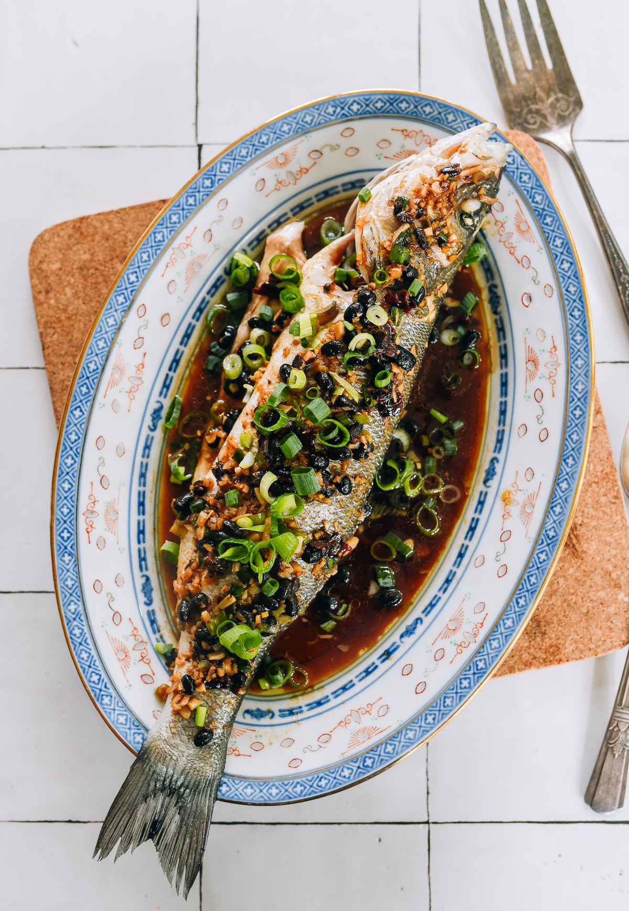

Steamed Fish with Black Bean Sauce

Description
In this Steamed Fish with Black Bean Sauce recipe, delicate, flaky fish
gets a boost from salty, umami-packed fermented black beans. We have
instructions for using fillets or a whole fish!
This recipe is adapted from
Serious Eats.
Ingredients
-
1 whole fish (about 1.5 pounds) or 2 fish fillets (about 6 ounces each)
- 1 tablespoon fermented black beans, rinsed and chopped
- 2 cloves garlic, minced
- 1 tablespoon ginger, julienned
- 2 tablespoons soy sauce
- 1 tablespoon rice wine or dry sherry
- 1 teaspoon sugar
- 2 tablespoons vegetable oil
- 2 stalks green onions, sliced
- Fresh cilantro for garnish (optional)
- Steamed white rice, for serving
Instructions
-
If using a whole fish, clean and scale the fish, then make three
diagonal cuts on each side. If using fillets, pat them dry with paper
towels.
-
Place the fish on a heatproof plate that fits inside your steamer. If
you don't have a steamer, you can use a large pot with a steaming rack
or a metal colander.
-
In a small bowl, mix together the fermented black beans, garlic, ginger,
soy sauce, rice wine, and sugar. Spoon the mixture over the fish, making
sure to get some into the cuts if using a whole fish.
-
Set up your steamer and bring the water to a boil. Place the plate with
the fish in the steamer, cover, and steam for about 8-10 minutes
(fillets) or 12-15 minutes (whole fish), or until the fish is opaque and
flakes easily with a fork.
-
While the fish is steaming, heat the vegetable oil in a small pan over
medium heat until it starts to shimmer.
-
Once the fish is done, carefully remove it from the steamer. Pour the
hot oil over the fish to sizzle the aromatics. Garnish with sliced green
onions and fresh cilantro if desired.
- Serve immediately with steamed white rice.